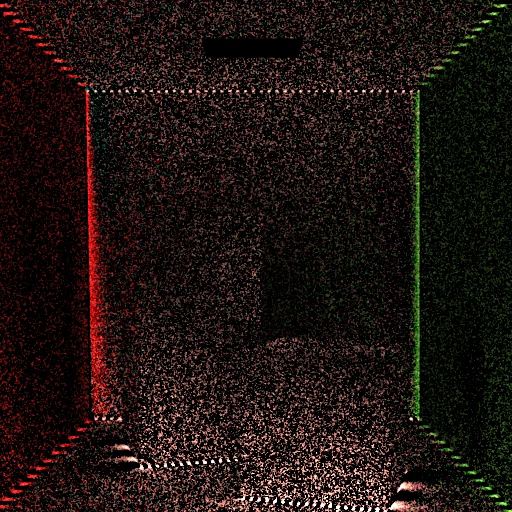
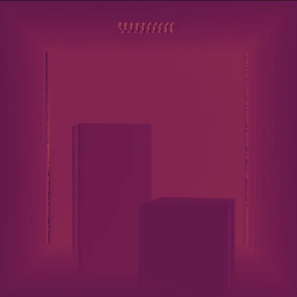
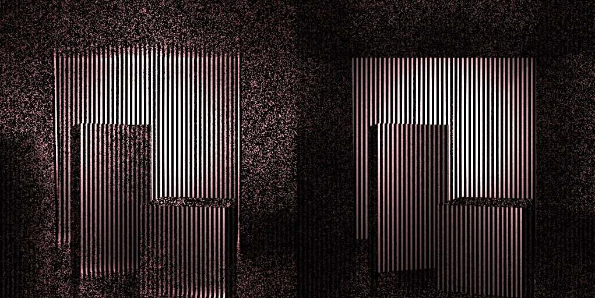

Holography & depth reconstruction
Can one spatially coded exposure reveal travel-time phase? This simulation study combines modulated illumination with sensor correlation, isolates a Fourier sideband and reconstructs depth, while showing why carrier placement, shutter timing and phase ambiguity can defeat an apparently plausible setup.
- L(t)
Encode the light
Choose illumination delay, spatial coding and a sensor reference.
- ▧
Record the correlation
The shutter and transport determine which phase information reaches each pixel.
- F
Isolate a sideband
Separate the coded term in frequency space and recover wrapped phase.
- φ→z
Resolve the ambiguity
Use calibration, continuity or extra frequencies to interpret depth.
The holographic analogy is algebraic: intensity modulation is distinct from optical-field interference.



Record, isolate and reconstruct a Fourier sideband
Record, isolate and reconstruct a Fourier sideband
Draws with
Artifact
Export
Purpose
Made with
Demonstrates
Wheel over the scene may zoom; move outside it to scroll the page.

Suspended · activate to run; playback pauses after the full panel leaves the vertical viewport.